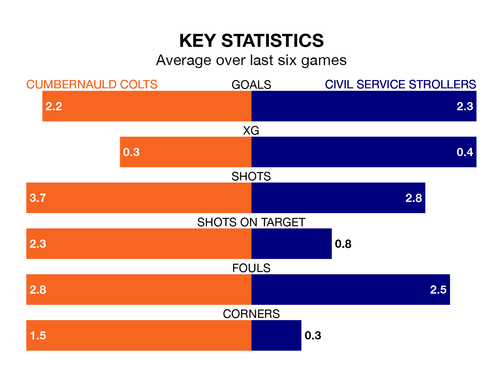

Cumbernauld Colts face a challenge to maintain their high-scoring form at home against a tight Civil Service Strollers defence on Saturday.
With 53 goals in 25 games, Cumbernauld Colts are the joint-fourth-highest scorers in the Lowland Football League ahead of the 3pm kick-off at the Broadwood Stadium.
They face a Civil Service Strollers side who have scored 38 in 24 matches, but conceded only 26 goals, putting them third among the league's tightest defences – only Tranent Juniors and Albion Rovers have conceded fewer goals.
Cumbernauld Colts are second in the table after 25 games, of which they have won 15 and drawn five, earning 50 points.
Civil Service Strollers are four places behind Colts in sixth, with 12 wins and five draws putting them on 41 points.
In the last 10 years, Cumbernauld Colts and Civil Service Strollers have played each other on 12 occasions. They won four each, and they drew four times.
On average, Colts scored 1.3 goals and Civil Service Strollers 1.6 in those matches.
Their last meeting was on September 9, when Civil Service Strollers won 3-1 at home.
The home side are in reasonable form in the Lowland Football League, with three wins and two draws from their last six games.
With four wins and a draw over that period, the visitors' form is slightly better – they have taken 13 points from 18, compared to Cumbernauld Colts's 11.
Cumbernauld Colts's last match was on February 10, a 2-1 win against Bo'ness United.
Civil Service Strollers drew 1-1 with Cowdenbeath last time out, on January 27.
Updated: 13:04 (UTC), 16/02/24